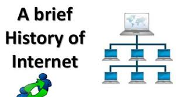
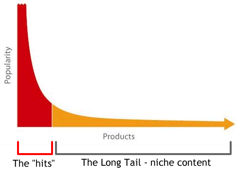

Før 1957 arbejdede computere kun på en opgave ad gangen, ”batch processing”. Programmering i den tid, bestod meget af manuelt arbejde, og alt information blev leveret fra person til person, ikke digitalt. I det computere blev større og større, skulle de opbevares i separate og kølige rum hvilket betød at programmørerne ikke kunne arbejde direkte på computeren, men skulle have specialister til at forbinde dem, men blev alligevel alt for problematisk. 1957 Er året hvor det hele startede, man lavede en fjern forbindelse hvilket betød at programmører kunne arbejde direkte på computerne selvom de ikke var fysisk til stede ved computeren. Det er her konceptet om at dele opstod, hvor man lærte at dele processen fra en computer til flere brugere. ARPANET – RAND – NPL – CYCLADES havde hver deres fundament for hvordan internettet er som vi kender det i dag. En motivationsfaktor for mange visionære og programmøre var en tanke om global viden ville betyde verdensfred.
Webbets udvikling kan deles i fem perioder som er hovedkategorier inden for udvikling og brug af webbet.
1. Tidlige eksperimenter (fra 1993)Denne periode er karakteriseret ved at alle forsøgte at eksperimentere sig frem til hvordan et websted skulle opbygges efter udviklingen af NCSA Mosaic browseren i 1993. Der var mange begrænsninger i forhold til HTML-sproget, såsom fonten og placeringen af indhold og grafikken, det hele var bestemt af HTML-fortolkeren og ikke afsenderen. Det Hvide Hus var en af de første offentlige institutioner der havde deres eget website med grafik.
Der kom et højt antal private brugere i midten af 90’erne. Det var også der amazon.com blev lanceret som en af de første webshops. Stiftelsen af Amazon betød at mange andre virksomheder blev inspireret til at lave deres egen webshop, man ville gerne eksperimentere med det nye om at tjene penge på webbet. Mange forsøgte at starte deres eget, men som undskyldning for ikke at gøre sitet færdigt, bestod sitet af en tegnet mand, der graver, og teksten: ”Under konstruktion”.
I takt med det høje antal brugere, havde professionelle designere forskellige synspunkter i forhold til hvad der er vigtigst på et website. Designeren David Siegel forsøgte at vise meningen med et website ved at udforme det grafisk og var fortaler for at designet på et website er vigtigere end indholdet. På et tidspunkt var der sites der var fyldt med avancerede funktioner, som gjorde det vanskeligt for både brugere og designere. Det var opstået efter flash gjorde det muligt at vise animationer, hvor designere lavede mange animerede knapper osv. Jakob Nielsen gik fra forsker til webguru, i modsætning til Siegel mente han at indholdet på et website er vigtigere end designet.
I denne periode frygtede man at brugere ville miste begejstringen for nettet. Der var problemer med at indholdet ikke var tilgængeligt for brugeren, siden loadede langsomt ellers gik den helt ned, hvilket var meget frustrerende for brugeren. Samme tidspunkt kom Google til verden, som gjorde det muligt for brugeren at finde det, som brugeren havde søgt efter.
Under perioden blev web 2.0 det der adskillede den fra web 1.0, var at magten lå hos brugerne, fremfor de etablerede autoriteter. Et centralt web 2.0 princip var ”den lange hale” som blev bemærket i forbindelse med salg af musik på webbet, hvor der ikke var nogen grænse i forhold til udvalget af musik. Mens udvalget i en fysisk forretning ville være begrænset til det der er allermest efterspurgt. Tilsammen udgjorde salget (som man normalt ikke ville have i sin fysisk butik, fordi de ikke var så eftertragtet), 40% af omsætningen. Den lange hale er et generelt fænomen. Samme periode kom MySpace også til verden, hvor man kunne udtrykke sig som man ikke kunne tidligere med fotos, grafik, venner osv. I modsætning til Linkedin som brugte en ”bankagtig stil”.
I 2010 blev mobile webbrugere i overtal. Man skulle være påpasselig i forhold til hvordan man havde konstrueret sit website, da mobile webbrugere ikke ville gå på websider der ikke var optimeret til mobile enheder. Man begyndte derfor at arbejde responsivt med hjemmesider og det er der ideen om ”mobile-first” stammer fra.